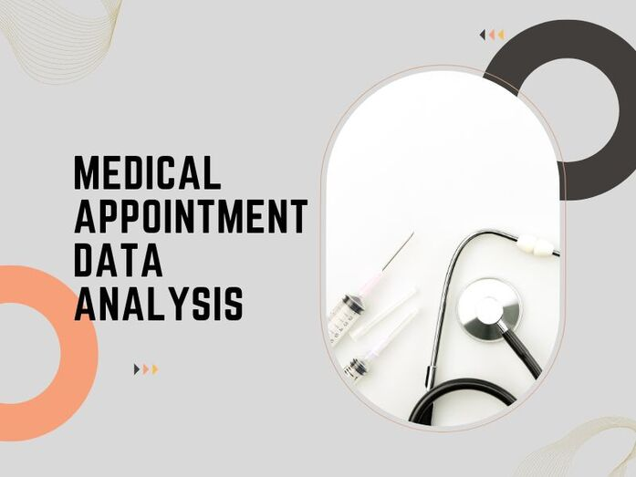
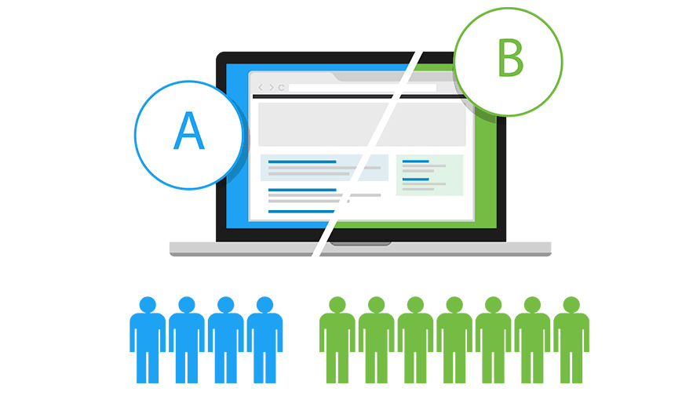
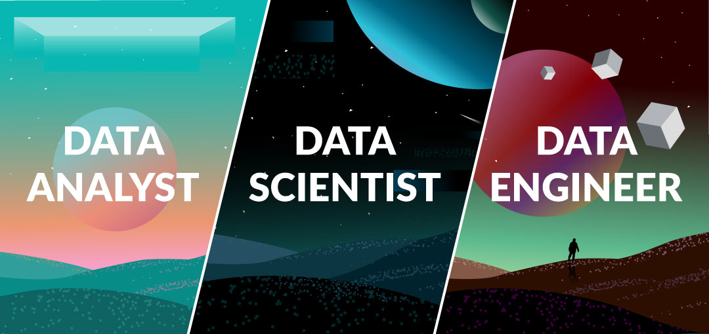

This project is focused on building a face detection model to be used in security systems. The model is trained to identify and detect human faces from a database of images, enabling it to enhance security measures by recognizing authorized individuals.
In this project we take raw housing data and transform
it in SQL Server to make it more usable for analysis.
This Project contains SQL code for exploring and analyzing Covid-19 data. The code utilizes various SQL techniques and functions to extract insights from the dataset.

Utilized Python code for data wrangling, cleaning, and exploratory analysis,
Aimed to improve appointment attendance rates and optimize medical resources.

This project focused on analyzing the results of an A/B test conducted by an e-commerce website. The goal of the analysis was to help the company make a decision regarding whether they should implement a new webpage, keep the old webpage, or run the experiment longer.
In this project we scrape data from Amazon to analyze price data for products.
This project is a web scraper built with Python and the BeautifulSoup library to extract job details from the Wuzzuf job portal.
This Power BI dashboard provides comprehensive information about Olympics until 2020.

This Power BI dashboard project revolves around the breakdown of a survey gathered from around 600 data professionals.